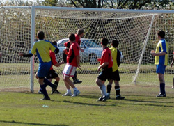
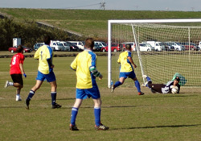

|
Misato Sun 20th November. After hammering out a draw in this fixture last season, both teams arrived at Misato with heightened expectations. AFC brought a revamped squad brimming with confidence after their Highland Games triumph, whereas in two league fixtures Wall Street Clash had promised much in terms of performance, despite a paltry return in terms of points.
|  |
|
Ian Webster heads home the winner for WallStreet Clash.
|
Right from kick-off. play tended to rage around the centre of the pitch. Sustained periods of possession for either team were few and far apart; a congested midfield meant little time on the ball and there were few passing sequences to entertain the two spectators and passing dog-walkers. In the opening 20 minutes both teams had opportunities; Yasu broke down the left flank for Clash and seemed to be fouled as he entered the area, with the ref no doubt more inclined to give the penalty had Yasu not indulged in theatricals on his way to ground. For AFC, number 9 Ollie found space down the left, but his well-hit cross could not get over (reluctant) keeper Sid. This was the pattern of play – two well-matched midfields grafting out sudden breaks for their forwards. Clash midfielder Andy stole into the area but hit his shot straight at the keeper, then blasted the rebound over. Striker Rob dispossessed a defender, and with the keeper stranded, poked his shot wide. Ominously, Yasu of Clash was finding space and creating chances on the flanks. AFC were relying more on coming through the middle, but failed to trouble the keeper in a first half that ended 0-0.
|  |
|
Eric Follet puts his shot too close to the AFC keeper.
|
The second half was more of the same. Andy of Clash again found space in the box, but dragged a shot wide of the far post with two Clash teammates closing in. AFC were seeing plenty of the ball around the Clash box but couldn’t find the finish. The game looked to be heading to a scoreless draw, till centre half Ian Webster intervened. Yasu floated a textbook corner in to the far post, and Ian rose from seven yards out to bullet a header home. It was Clash’s third set-piece goal in a row. Man-of-the match Yasu had exhibited classy delivery all day and at last his teammates had made use of it. AFC mounted an impressive campaign for an equaliser, with Ollie finding space, if not the target, on a few occasions. The best chance fell to Eric, who raced in one-on-one with Sid, but the Clash stand-in keeper got down well to take the ball from his feet. Three points to the Clash in a game that featured no cards and was a poster for sportsmanship, but both teams will feel they can secure more points in this league.
Match Reporter : Count Zero
|